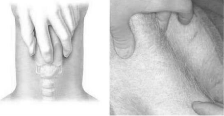
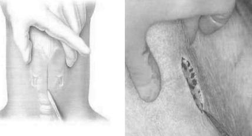
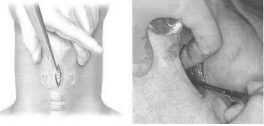
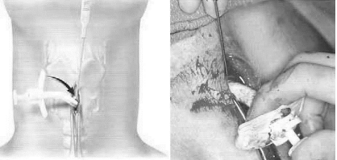
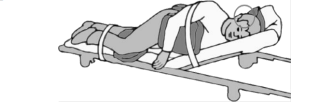
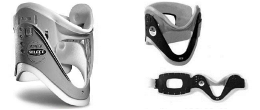
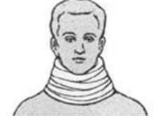
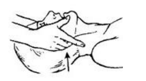
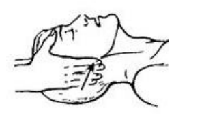
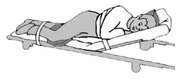

Особенности проведения реанимационных мероприятий при повреждениях различных областей.
При повреждениях различных областей есть ряд особенностей, которые необходимо учитывать при проведении СЛР (таблица 2).
Таблица 2. Особенности проведения реанимационных мероприятий при повреждении различных областей
| Анатомическая область | Особенности проведения реанимационных мероприятий |
|---|---|
| Повреждение головы |
1. Оценить необходимость проведения реанимационных мероприятий; 2. При массивном разрушении лицевой части черепа, для восстановления проходимости верхних дыхательных путей, если это невозможно сделать другими способами, необходимо произвести коникотомию: - Зафиксируйте гортань и проведите указательным пальцем от кадыка (наиболее выступающего хряща) вниз до чувства провала в «ямку». - Выполните срединный разрез кожи длиной 3—5 см. - Рассеките связку, соединяющую хрящи, в поперечном направлении. - Введите в трахею любую полую внутри трубку (корпус ручки) - Проводите искусственную вентиляцию через установленную трубку. - В настоящее время существует множество современных наборов, облегчающих проведение коникотомии. 3. После восстановлении спонтанного дыхания придается боковое фиксированное положение с приподнятым головным концом. 
Голову не запрокидывать, сохраняя ее
промежуточное положение Цель: а) улучшение венозного оттока крови б) предупреждение отека головного мозга |
| Повреждение шейного отдела позвоночника |
1. Реанимационные мероприятия проводятся после фиксации шейного отдела позвоночника табельными: или подручными средствами: 2. Предпочтительно восстановление проходимости верхних дыхательных путей при помощи дополнительных способов (воздуховод, S-образная трубка, воздуховод I-Gel, ларингеальная маска, Combitube, гипофарингеальный воздуховод) 3. При невозможности применить дополнительные способы, восстанавливаем проходимость верхних дыхательных путей путем выдвижения нижней челюсти вперед или подтягивания подбородка, без запрокидывания головы. а. Основания больших пальцев устанавливаются в область скуловых костей, фиксируя голову пациента от запрокидывания. б. Средний и безымянный пальцы производят давление на углы нижней челюсти, выдвигая ее вверх. 4. После восстановления спонтанного дыхания придавать боковое фиксированное положение нельзя. Пострадавшего транспортируют на щите лежа на спине. При транспортировке постоянно контролируют проходимость верхних дыхательных путей. 5. С целью профилактики западения языка пострадавшему оставляют установленные средства для восстановления проходимости верхних дыхательных путей (воздуховод, S-образная трубка, воздуховод I-Gel, ларингеальная маска, Combitube, гипофарингеальный воздуховод - смотри Приложение 2), или фиксируют язык булавкой. |
| Повреждение позвоночника |
1. Реанимационные мероприятия по возможности проводятся на щите. 2. После восстановления спонтанного дыхания придавать боковое фиксированное положение нельзя. Пострадавшего транспортируют на щите лежа на спине. При транспортировке постоянно контролируют проходимость верхних дыхательных путей. 3. С целью профилактики западения языка пострадавшему оставляют установленные средства для восстановления проходимости верхних дыхательных путей (воздуховод, S-образная трубка, воздуховод I-Gel, ларингеальная маска, Combitube, гипофарингеальный воздуховод), или фиксируют язык булавкой. |
| Повреждение груди |
1. Перед началом проведения реанимационных если была наложена оклюзионная повязка, ее необходимо снять. 2. При подозрении на напряженный пневмоторакс поставить во 2 межреберье декомпрессионную иглу. 3. После восстановления спонтанного дыхания накладывается оклюзионная повязка, придается боковое фиксированное положение с приподнятым головным концом. -Фиксированное боковое положение -Положение на поврежденной стороне Цель: а) поддержание проходимости дыхательных путей; б) иммобилизация ребер, уменьшение боли; в) улучшение вентиляции легкого на неповрежденной стороне. |